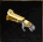
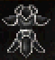
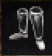
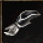
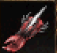
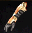
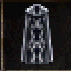
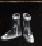
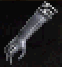

강철 세트
 강철 면갑
강철 면갑세트 구성 강철 면갑 / 강철 판금 갑옷 / 강철 장갑 / 강철 부츠
사용 가능 클래스 기사
세트 효과 AC-5, STR+1, MR+10, 최대 HP+50
강철 면갑 옵션: AC-3 / 클래스: 기사 / 인챈트: +4까지 안전하게 가능 / 설명: 인챈트+1 당 AC-1 식 증가, 세트 아이템 : 강철 세트
강철 판금 갑옷 옵션: AC-7 / 클래스: 기사 / 인챈트: +4까지 안전하게 가능 / 설명: 인챈트+1 당 AC-1 식 증가, 세트 아이템 : 강철 세트
강철 장갑 옵션: AC-1 / 클래스: 군주, 기사, 요정, 마법사, 다크엘프 / 인챈트: +4까지 안전하게 가능 / 설명: 인챈트+1 당 AC-1 식 증가, 세트 아이템 : 강철 세트
강철 부츠 옵션: AC-3 / 클래스: 군주, 기사, 마법사, 요정, 다크엘프 / 인챈트: +4까지 안전하게 가능 / 설명: 인챈트+1 당 AC-1 식 증가, 세트 아이템 : 강철 세트
커츠 세트
 커츠의 투구
커츠의 투구
커츠의 장갑세트 구성 커츠의 투구 / 커츠의 갑옷 / 커츠의 부츠 / 커츠의 장갑
사용 가능 클래스 기사
세트 효과 AC -10, CON+2, 최대 HP+100, 대미지 감소+2, 변신 : 커츠
커츠의 투구 옵션: AC-3 / 클래스: 기사 / 인챈트: +4까지 안전하게 가능 / 설명: 인챈트+1 당 AC-1 식 증가, 세트 아이템 : 커츠 세트
커츠의 갑옷 옵션: AC-7 / 클래스: 기사 / 인챈트: +4까지 안전하게 가능 / 설명: 인챈트+1 당 AC-1 식 증가, 세트 아이템 : 커츠 세트
커츠의 부츠 옵션: AC-3 / 클래스: 기사 / 인챈트: +4까지 안전하게 가능 / 설명: 인챈트+1 당 AC-1 식 증가, 세트 아이템 : 커츠 세트
커츠의 장갑 옵션: AC-2 / 클래스: 기사 / 인챈트: +4까지 안전하게 가능 / 설명: 인챈트+1 당 AC-1 식 증가, 세트 아이템 : 커츠 세트
데스나이트 세트
 데스나이트의 투구
데스나이트의 투구
데스나이트의 갑옷
데스나이트의 부츠
데스나이트의 장갑세트 구성 데스나이트의 투구 / 데스나이트의 갑옷 / 데스나이트의 부츠 / 데스나이트의 장갑
사용 가능 클래스 군주, 기사, 요정, 마법사, 다크엘프
세트 효과 AC-10, STR+2, 근거리 대미지+2, 변신: 데스나이트
데스나이트의 투구 옵션: AC-3 / 클래스: 군주, 기사, 요정, 마법사, 다크엘프 / 인챈트: +4까지 안전하게 가능 / 설명: 인챈트+1 당 AC-1 식 증가, 세트 아이템: 데스 나이트 세트
데스나이트의 갑옷 옵션: AC-7 / 클래스: 군주, 기사, 요정, 마법사, 다크엘프 / 인챈트: +4까지 안전하게 가능 / 설명: 인챈트+1 당 AC-1 식 증가, 세트 아이템: 데스 나이트 세트
데스나이트의 부츠 옵션: AC-3 / 클래스: 군주, 기사, 요정, 마법사, 다크엘프 / 인챈트: +4까지 안전하게 가능 / 설명: 인챈트+1 당 AC-1 식 증가, 세트 아이템: 데스 나이트 세트
데스나이트의 장갑 옵션: AC-2 / 클래스: 군주, 기사, 요정, 마법사, 다크엘프 / 인챈트: +4까지 안전하게 가능 / 설명: 인챈트+1 당 AC-1 식 증가, 세트 아이템: 데스 나이트 세트
데몬 세트
 데몬의 투구
데몬의 투구
데몬의 장갑세트 구성 데몬의 투구 / 데몬의 갑옷 / 데몬의 부츠 / 데몬의 장갑
사용 가능 클래스 군주, 기사, 요정, 마법사, 다크엘프
세트 효과 데몬 변신, AC-2, HP 회복+5
데몬의 투구 옵션: AC-2 / 클래스: 군주, 기사, 마법사, 요정, 다크엘프 / 인챈트: +4까지 안전하게 가능 / 설명: 인챈트+1 당 AC-1 식 증가, 세트 아이템 : 데몬 세트
데몬의 갑옷 옵션: AC-6 / 클래스: 군주, 기사, 마법사, 요정, 다크엘프 / 인챈트: +4까지 안전하게 가능 / 설명: 인챈트+1 당 AC-1 식 증가, 세트 아이템 : 데몬 세트
데몬의 부츠 옵션: AC-3 / 클래스: 군주, 기사, 마법사, 요정, 다크엘프 / 인챈트: +4까지 안전하게 가능 / 설명: 인챈트+1 당 AC-1 식 증가, 세트 아이템 : 데몬 세트, 타라스의 부츠의 재료.
데몬의 장갑 옵션: AC-2 / 클래스: 군주, 기사, 요정, 마법사, 다크엘프 / 인챈트: +4까지 안전하게 가능 / 설명: 인챈트+1 당 AC-1 식 증가, 세트 아이템 : 데몬 세트, 타라스의 장갑의 재료이다.
반왕 세트
 반왕의 투구
반왕의 투구
반왕의 건틀릿세트 구성 반왕의 투구 / 반왕의 갑옷 / 반왕의 부츠 / 반왕의 건틀릿
사용 가능 클래스 군주, 기사, 요정, 다크엘프
세트 효과 AC-7, STR+1, DEX+1, 근거리 대미지+2, MP 회복+6, 변신: 켄 라우헬
반왕의 투구 옵션: AC-3 / 클래스: 군주, 기사, 요정, 다크엘프 / 인챈트: +4까지 안전하게 가능 / 설명: 인챈트+1 당 AC-1 식 증가, 세트 아이템 : 반왕 세트
반왕의 갑옷 옵션: AC-8 / 클래스: 군주, 기사, 요정, 다크엘프 / 인챈트: +4까지 안전하게 가능 / 설명: 인챈트+1 당 AC-1 식 증가, 세트 아이템 : 반왕 세트
반왕의 부츠 옵션: AC-3 / 클래스: 군주, 기사, 요정, 다크엘프 / 인챈트: +4까지 안전하게 가능 / 설명: 인챈트+1 당 AC-1 식 증가, 세트 아이템 : 반왕 세트
반왕의 건틀릿 옵션: AC-2 / 클래스: 군주, 기사, 요정, 다크엘프 / 인챈트: +4까지 안전하게 가능 / 설명: 인챈트+1 당 AC-1 식 증가, 세트 아이템 : 반왕 세트
케레니스 세트
 케레니스의 서클릿
케레니스의 서클릿
케레니스의 로브
케레니스의 부츠
케레니스의 장갑세트 구성 케레니스의 서클릿 / 케레니스의 로브 / 케레니스의 부츠 / 케레니스의 장갑
사용 가능 클래스 마법사
세트 효과 INT+2, 최대 MP+100, MP 회복+18, 변신: 케레니스
케레니스의 서클릿 옵션: AC-3 / 클래스: 마법사 / 인챈트: +4까지 안전하게 가능 / 설명: 인챈트+1 당 AC-1 식 증가, 세트 아이템 : 케레니스 세트
케레니스의 로브 옵션: AC-5 / 클래스: 마법사 / 인챈트: +4까지 안전하게 가능 / 설명: 인챈트+1 당 AC-1 식 증가, 세트 아이템 : 케레니스 세트
케레니스의 부츠 옵션: AC-2 / 클래스: 마법사 / 인챈트: +4까지 안전하게 가능 / 설명: 인챈트+1 당 AC-1 식 증가, 세트 아이템 : 케레니스 세트
케레니스의 장갑 옵션: AC-1 / 클래스: 마법사 / 인챈트: +4까지 안전하게 가능 / 설명: 인챈트+1 당 AC-1 식 증가, 세트 아이템 : 케레니스 세트